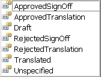
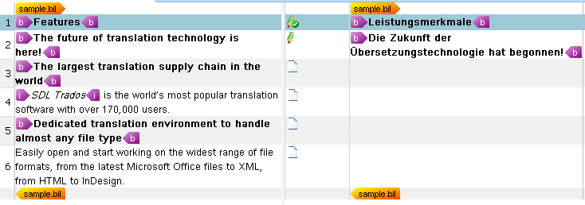

Applying the Segment Pair Confirmation Levels
This section explains how to process BIL unit status information and apply it to the corresponding segment pair status in SDLXLIFF.
Process the Segment Pair Status
Trados Studio applies confirmation levels to segment pairs, such as draft, translated, and approved. The following image shows the confirmation level values that SDLXLIFF uses:

The status attribute of the unit element maps directly to the segment pair status in Trados Studio. For simplicity, assume that units in a BIL file contain the following status values, which map to SDLXLIFF confirmation levels as shown here:
| BIL |
SDLXLIFF |
new |
unspecified |
fuzzy |
draft |
exact |
translated |
Apply the correct status value to a segment pair through the ConfirmationLevel property. First, update the CreateParagraphUnit() helper function by adding the following line, which calls another helper function to map the confirmation level values:
segmentPairProperties.ConfirmationLevel = CreateConfirmationLevel(xmlUnit.Attributes["status"].Value);
The complete CreateParagraphUnit() function should look like this:
// helper function for creating paragraph units
private IParagraphUnit CreateParagraphUnit(XmlNode xmlUnit)
{
// create paragraph unit object
IParagraphUnit paragraphUnit = ItemFactory.CreateParagraphUnit(LockTypeFlags.Unlocked);
// create segment pair object
ISegmentPairProperties segmentPairProperties = ItemFactory.CreateSegmentPairProperties();
// assign the appropriate confirmation level to the segment pair
segmentPairProperties.ConfirmationLevel=CreateConfirmationLevel(xmlUnit.Attributes["status"].Value);
// add source segment to paragraph unit
ISegment srcSegment = CreateSegment(xmlUnit.SelectSingleNode("source/seg"), segmentPairProperties);
paragraphUnit.Source.Add(srcSegment);
// add target segment to paragraph unit if available
if(xmlUnit.SelectSingleNode("target/seg") != null)
{
ISegment trgSegment = CreateSegment(xmlUnit.SelectSingleNode("target/seg"), segmentPairProperties);
paragraphUnit.Target.Add(trgSegment);
}
// create paragraph unit context
string id = xmlUnit.SelectSingleNode("./@id").InnerText;
if(xmlUnit.SelectSingleNode("type/@spec")!=null)
{
string spec = xmlUnit.SelectSingleNode("type/@spec").InnerText;
paragraphUnit.Properties.Contexts=CreateContext(spec, id);
} else {
paragraphUnit.Properties.Contexts = CreateContext("Paragraph", id);
}
// extract comment (if applicable)
if(xmlUnit.SelectSingleNode("comment")!=null)
{
paragraphUnit.Properties.Comments = CreateComment(xmlUnit.SelectSingleNode("comment").InnerText);
}
return paragraphUnit;
}
Now add the helper function that uses a switch statement to map the BIL status values to SDLXLIFF confirmation levels:
private ConfirmationLevel CreateConfirmationLevel(string BilStatus)
{
ConfirmationLevel sdlxliffLevel = ConfirmationLevel.Unspecified;
switch (BilStatus)
{
case "new":
sdlxliffLevel = ConfirmationLevel.Unspecified;
break;
case "fuzzy":
sdlxliffLevel = ConfirmationLevel.Draft;
break;
case "exact":
sdlxliffLevel = ConfirmationLevel.Translated;
break;
default:
sdlxliffLevel = ConfirmationLevel.Unspecified;
break;
}
return sdlxliffLevel;
}
After you add this code to the parser class, the SDLXLIFF document in Trados Studio should look like this. Trados Studio displays the confirmation levels as icons between the source and target segments.

Note
This content may be out of date. To verify the latest information on this topic, inspect the libraries in the Visual Studio Object Browser.